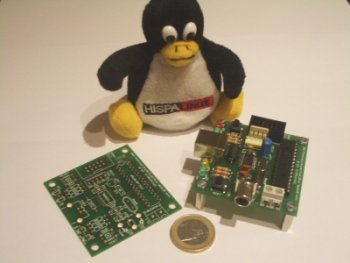
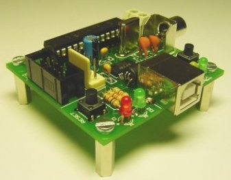

|  |
 |


Introducción
Disposición de componentes

Planos
Version 3.0
- Ficheros FUENTE y de fabricación:
| Fichero | Descripción |
|---|---|
| Chronopic_3.0_kicad.zip | Ficheros Fuentes para Kicad: esquemático y PCB |
| Chronopic_3.0_gerber.zip | Ficheros para fabricación (GERBER) y taladros |
- Ficheros con documentación en PDF:
| Fichero | Descripción |
|---|---|
| Chronopic_3.0_sch.pdf | Esquemático |
| Chronopic_3.0-PCB-componentes.pdf | PCB. Cara de los componentes |
| Chronopic_3.0-PCB-cobre.pdf | PCB. Cara inferior |
| Chronopic_3.0-PCB-serigrafias.pdf | Serigrafías |
Autores
Licencia
| |
| Este proyecto tiene una licencia libre. Se permite expresamente su copia, modificación, distribuición y fabricación siempre que se reconozca a los autores y se comparta el proyecto bajo la misma licencia.
Descarga de Responsabilidad. Los autores no se hacen responsables en ningún caso de los posibles daños o pérdidas de garantía que pueda ocasionar el uso, debido o indebido de la información contenida en este proyecto. |
Noticias
- 31/Oct/2008: Añadido dibujo con la disposición de componentes
- 22/Enero/2008: Primera versión de esta página
Enlaces
- Proyecto Chronojump
- Información sobre el chip USB-serie FT232RL
- Hoja de datos del FT232RL
- Tarjeta Chronopic V1.0: Basada en la tarjeta Skypic + una extensión